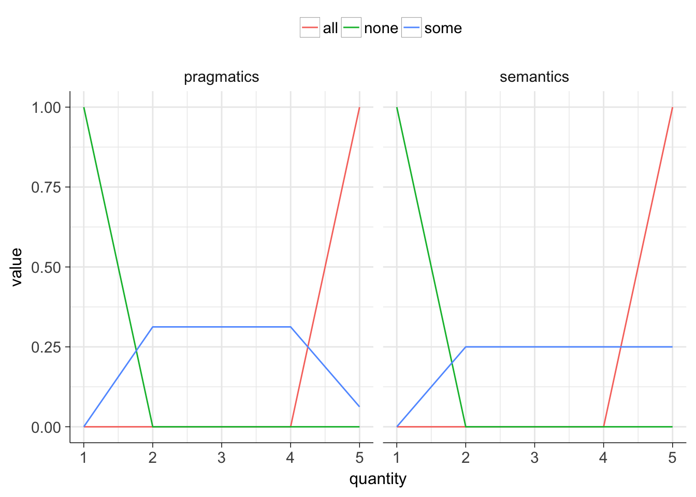
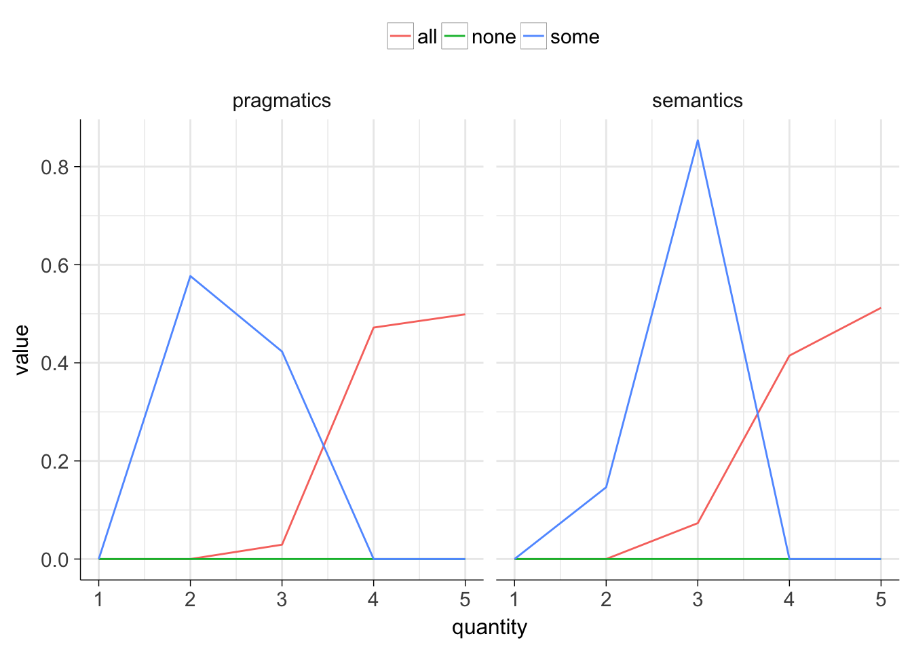

source("setup.r")## >> these packages are now attached:
## lefftpack reshape2 ggplot2 magrittr dplyr## >> custom `ggplot2::` plot theme is now setBelow is a listing of the contents of the rrrsa:: package.
# FIVE DATASETS
rsa_data <- list(
# from frank et al submitted:
frank = rrrsa::d_pragmods,
# from pelfrank16:
pf2 = rrrsa::peloquinFrank_2Alts,
pf3 = rrrsa::peloquinFrank_3Alts,
pf4 = rrrsa::peloquinFrank_4Alts,
pf5 = rrrsa::peloquinFrank_5Alts
)# THREE HELPER FUNCTIONS
rsa_helper <- list(
# converts vec2 to whatever type vec1 is
convertVecType = rrrsa::rsa.convertVecType,
# this is just `function(x) x/sum(x)` for positive `x`
normVec = rrrsa::rsa.normVec,
# just changes desired column names
renameCol = rrrsa::rsa.renameCol
)# SIX ANALYSIS FUNCTIONS
rsa_model <- list(
# computes informativity given params `m_u`, `alpha`, `cost`
informativity = rrrsa::rsa.informativity,
# computes utility given params `items`, `costs`, `alpha`
utility = rrrsa::rsa.utility,
# wrapper that runs `depth`-many iterations of `rsa.fullRecursion()`
reason = rrrsa::rsa.reason,
# wrapper around `rsa.reason` that accepts input as a data frame
runDf = rrrsa::rsa.runDf,
# explores correlation between data and model preds for varying `alpha`
tuneDepthAlpha = rrrsa::rsa.tuneDepthAlpha,
# main function implementing RSA model
fullRecursion = rrrsa::rsa.fullRecursion
)### ADAPTED CODE FROM PACKAGE VIGNETTE FOR DEMO OF fullRecursion()
# m/dat_pre ~~> matrix of semantics (rows=meaning (m rows), cols=words (n cols))
# costs ~~> ncol(m) vector of costs (default is 0 valued vector)
# priors ~~> nrow(m) vector of priors (default is uniform)
# alpha ~~> decision hyper-param
dat_pre <- matrix(
nrow=5, ncol=3, dimnames=list(paste0("row", 1:5), c("none","some","all")),
data=c(1.0, .00, .00,
.00, .00, .00,
.25, .25, .25,
.25, .00, .00,
.00, .00, 1)
)
dat_pre_df <- rsa_matrix_to_df(dat_pre, response_colname="semantics")
costs <- c(none=0, some=0, all=0)
priors <- rnorm(nrow(dat_pre), mean=.5, sd=.1)
alpha <- 1
# rsa.fullRecursion(m=m, costs=rep(0, ncol(m)), priors=rep(1, nrow(m)), alpha=2)
dat_post <- fullRecursion(m=dat_pre,
costs=rep(0,ncol(dat_pre)),
priors=rep(1,nrow(dat_pre)),
alpha=alpha)
knitr::kable(dat_pre, row.names=TRUE)| none | some | all | |
|---|---|---|---|
| row1 | 1 | 0.00 | 0 |
| row2 | 0 | 0.25 | 0 |
| row3 | 0 | 0.25 | 0 |
| row4 | 0 | 0.25 | 0 |
| row5 | 0 | 0.25 | 1 |
knitr::kable(dat_post, row.names=TRUE)| none | some | all | |
|---|---|---|---|
| row1 | 1 | 0.0000 | 0 |
| row2 | 0 | 0.3125 | 0 |
| row3 | 0 | 0.3125 | 0 |
| row4 | 0 | 0.3125 | 0 |
| row5 | 0 | 0.0625 | 1 |
make_rsa_plot(dat_pre, dat_post)
source("setup.r")## >> these packages are already attached:
## lefftpack reshape2 ggplot2 magrittr dplyr## >> no new packages were attached.nams <- c("exp", "scale", "stars", "speaker.p", "words", "e11", "e6")
# 1) quantityVarName :: "stars"
# 2) semanticsVarName :: "speaker.p"
# 3) itemVarName :: "words"
# 4) groupVarName :: "scale"
# other) experiment number :: "exp"
# other) Pragmatic judgments study 1 (e6), study 2 (e11)
sapply(rsa_data, dim)## frank pf2 pf3 pf4 pf5
## [1,] 135 50 75 100 125
## [2,] 16 7 7 7 7sapply(rsa_data, function(df){ identical(names(df), nams) })## frank pf2 pf3 pf4 pf5
## FALSE TRUE TRUE TRUE TRUEpf_data <- rsa_data[names(rsa_data)[names(rsa_data) != "frank"]]
pf_data <- lapply(seq_along(pf_data), function(idx){
pf_data[[names(pf_data)[idx]]] %>%
mutate(dataset = names(pf_data)[idx]) %>%
mutate_if(is.factor, as.character) %>%
rename(study1=e6, study2=e11)
}) %>%
(function(df_list) do.call(rbind, df_list))
str(pf_data)## 'data.frame': 350 obs. of 8 variables:
## $ exp : chr "e8" "e8" "e8" "e8" ...
## $ scale : chr "good_excellent" "good_excellent" "good_excellent" "good_excellent" ...
## $ stars : int 1 2 3 4 5 1 2 3 4 5 ...
## $ speaker.p: num 0 0.0345 0.069 0.4138 0.4828 ...
## $ words : chr "excellent" "excellent" "excellent" "excellent" ...
## $ study2 : num 0 0 0 0.302 0.698 ...
## $ study1 : num 0 0 0 0.0732 0.9268 ...
## $ dataset : chr "pf2" "pf2" "pf2" "pf2" ...# pf_data %>% filter(words=="none") %>% View() # *** # carve out the <none, some, all> scale (both expts 1 and 2)
# pf_data %>% filter(scale=="some_all") %>% View()
pf3_NSA <- pf_data %>%
filter(dataset=="pf3") %>%
filter(scale=="some_all") %>%
select(-exp, -scale, -dataset) %>%
select(stars, words, study1, study2, speaker.p) %>%
arrange(stars, words)
# all response fields are 0 for none, across the whole scale...
# pf3_NSA %>% filter(words=="none") %>% View() # ***
pf3_NSA_study1 <- pf3_NSA %>%
select(stars, words, value=study1) %>%
tidyr::spread(words, value) %>%
set_rownames(.$stars) %>% # `stars` now encoded as rownames
select(none, some, all) %>%
as.matrix()
# this is the semantic representation (prob dist) of each scalar item
input_matrix <- pf3_NSA_study1
# need to make sure length matches ncol
costs <- c(none=0, some=0, all=0)
# need to make sure length matches nrow
priors <- rnorm(nrow(input_matrix), mean=.5, sd=.1)
# parameter that fixes "how much the cost matters"
alpha <- 1
# calculate the posterior distributions for each scalar item
output_matrix <- fullRecursion(
input_matrix, costs=costs, priors=priors, alpha=alpha
)
knitr::kable(input_matrix, row.names=TRUE)| none | some | all | |
|---|---|---|---|
| 1 | 0 | 0.0000000 | 0.0000000 |
| 2 | 0 | 0.1463415 | 0.0000000 |
| 3 | 0 | 0.8536585 | 0.0731707 |
| 4 | 0 | 0.0000000 | 0.4146341 |
| 5 | 0 | 0.0000000 | 0.5121951 |
knitr::kable(output_matrix, row.names=TRUE)| none | some | all | |
|---|---|---|---|
| 1 | 0 | 0.0000000 | 0.0000000 |
| 2 | 0 | 0.5769285 | 0.0000000 |
| 3 | 0 | 0.4230715 | 0.0292600 |
| 4 | 0 | 0.0000000 | 0.4718982 |
| 5 | 0 | 0.0000000 | 0.4988418 |
make_rsa_plot(input_matrix, output_matrix)
# play around with all the params!!!
rsa.reason(m=input_matrix,
costs=rep(0, ncol(input_matrix)),
priors=rep(1, nrow(input_matrix)),
depth=2,
alpha=1,
usePriorEveryRecurse=FALSE)## none some all
## 1 0 0.0000000 0.0000000
## 2 0 0.5190468 0.0000000
## 3 0 0.4809532 0.0353968
## 4 0 0.0000000 0.4823016
## 5 0 0.0000000 0.4823016reason(input_matrix,
costs=rep(0, ncol(input_matrix)),
priors=rep(1, nrow(input_matrix)),
alpha=1,
depth=2,
recycle_priors=FALSE)## none some all
## 1 0 0.0000000 0.0000000
## 2 0 0.5190468 0.0000000
## 3 0 0.4809532 0.0353968
## 4 0 0.0000000 0.4823016
## 5 0 0.0000000 0.4823016rsa.fullRecursion(input_matrix,
costs=rep(0, ncol(input_matrix)),
priors=rep(1, nrow(input_matrix)),
alpha=1)## none some all
## 1 0 0.0000000 0.00000000
## 2 0 0.5205479 0.00000000
## 3 0 0.4794521 0.03797468
## 4 0 0.0000000 0.48101266
## 5 0 0.0000000 0.48101266fullRecursion(input_matrix,
costs=rep(0, ncol(input_matrix)),
priors=rep(1, nrow(input_matrix)),
alpha=1)## none some all
## 1 0 0.0000000 0.00000000
## 2 0 0.5205479 0.00000000
## 3 0 0.4794521 0.03797468
## 4 0 0.0000000 0.48101266
## 5 0 0.0000000 0.48101266The following equations are from Goodman & Frank’s (2012) model specification.
\[P(r_s|w, C) = \frac{P(w|r_s, C)\times P(r_s)}{\sum\limits_{r'\in C} P(w|r', C) \times P(r')}\]
where
\[P(w|r_s, C) = \frac{|w|^{-1}}{\sum\limits_{w'\in W} |w'|^{-1}}\]
where - \(|w|\) is the number of objects in \(C\) to which word \(w\) could(?) apply, - and \(W\) is the set of words that apply to the intended referent \(r_s\).
\[P(w|r_s, C) \propto e^{\alpha\times U(w; r_s, C)}\]
where
\[U(w; r_s, C) = I(w; r_s, C) - D(w)\]
where
for a sample \(x\) from a known distribution \(p(x)\), the surprisal of \(x\) is \[I_p(x) = -log(p(x))\]
utility decreases with surprisal:
\[I(w; r_s, C) = -I_{\widetilde{w}_C}(r_s)\]
where \(\widetilde{w}_C\) is the distribution over objects that would come froma aliteral interpretation of \(w\) in context \(C\).
“if listeners interpret the utterance \(w\) literally, assigning zero probability to objects for which the word is false, they assign equal probability to each object conssitent with \(w\). This distribution over objects can be written:”
\[\widetilde{w}_C(o) = \begin{cases} \frac{1}{|w|} & \text{if } w(o) = true\\\\ 0 & \text{otherwise } \end{cases} \]
equation S4 follows from S1-S3, which is equivalent to equation 2 (aka “the size principle”)
\[P(w|r_s, C) = \frac {e^{-(-\log(|w|^{-1}))}} {\sum\limits_{w'\in V \text{s.t. } w'(r_s) = true} e^{-(-\log(|w'|^{-1}))}}\]
“Thus in our experiments, the speaker’s abstract goal of being informative reduces to a simple formulation: whoose a word that applies to the referent and picks out a relatively smaller section of the context. Listeners may then use this model of a speaker as their likelihood function, to be combined with prior information about contextual salience as in Equation 1 in the main text.”